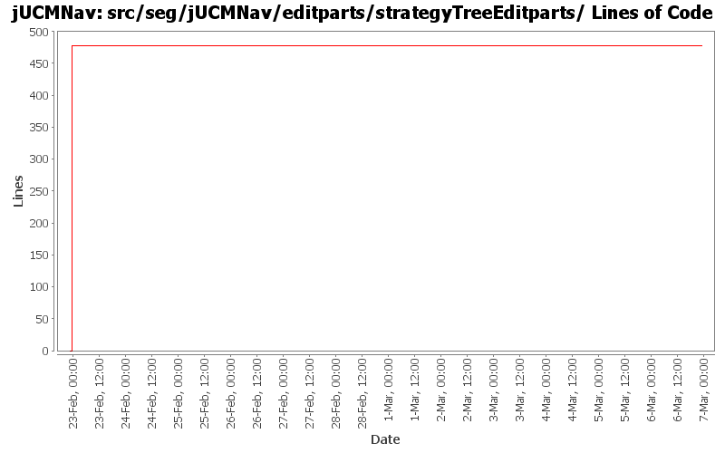

Module src/seg/jUCMNav/editparts/strategyTreeEditparts/
back to main page
Summary Period:
2005-02-22 to
2006-03-06
Modules
[root]/src/seg/jUCMNav/editparts/strategyTreeEditparts
Lines of Code

Total Lines Of Code:
477 (2006-03-31 18:01)
Authors
| Author |
Changes |
Lines of Code |
Lines per Change |
| Totals |
28 (100.0%) |
477 (100.0%) |
17.0 |
| jfroy |
27 (96.4%) |
477 (100.0%) |
17.6 |
| jkealey |
1 (3.6%) |
0 (0.0%) |
0.0 |
Most Recent Commits
-
jfroy
2006-03-06 21:57
-
0 lines of code changed in:
-
src/seg/jUCMNav/editparts/strategyTreeEditparts:
GRLspecStrategyTreeEditPart.java (changed)
-
jfroy
2006-03-06 21:13
-
0 lines of code changed in:
-
src/seg/jUCMNav/editparts/strategyTreeEditparts:
GRLspecStrategyTreeEditPart.java (changed)
-
jkealey
2006-02-27 21:51
-
0 lines of code changed in:
-
src/seg/jUCMNav/editparts/strategyTreeEditparts:
EvaluationStategyTreeEditPart.java (changed)
-
jfroy
2006-02-23 05:17
-
0 lines of code changed in:
-
src/seg/jUCMNav/editparts/strategyTreeEditparts:
EvaluationStategyTreeEditPart.java (changed)
-
jfroy
2006-02-22 22:48
-
477 lines of code changed in:
-
src/seg/jUCMNav/editparts/strategyTreeEditparts:
EvaluationGroupTreeEditPart.java (del),
EvaluationScenarioTreeEditPart.java (del),
EvaluationStategyTreeEditPart.java (new 69),
GRLspecScenarioTreeEditPart.java (del),
GRLspecStrategyTreeEditPart.java (new 88),
ScenarioRootEditPart.java (del),
ScenarioTreeEditPartFactory.java (del),
ScenarioUrnModelElementTreeEditPart.java (del),
StrategiesGroupTreeEditPart.java (new 81),
StrategyRootEditPart.java (new 30),
StrategyTreeEditPartFactory.java (new 52),
StrategyUrnModelElementTreeEditPart.java (new 157)
-
jfroy
2006-02-22 22:02
-
0 lines of code changed in:
-
src/seg/jUCMNav/editparts/strategyTreeEditparts:
EvaluationGroupTreeEditPart.java (changed),
EvaluationScenarioTreeEditPart.java (new),
GRLspecScenarioTreeEditPart.java (new),
ScenarioRootEditPart.java (changed),
ScenarioTreeEditPartFactory.java (new),
ScenarioUrnModelElementTreeEditPart.java (new)